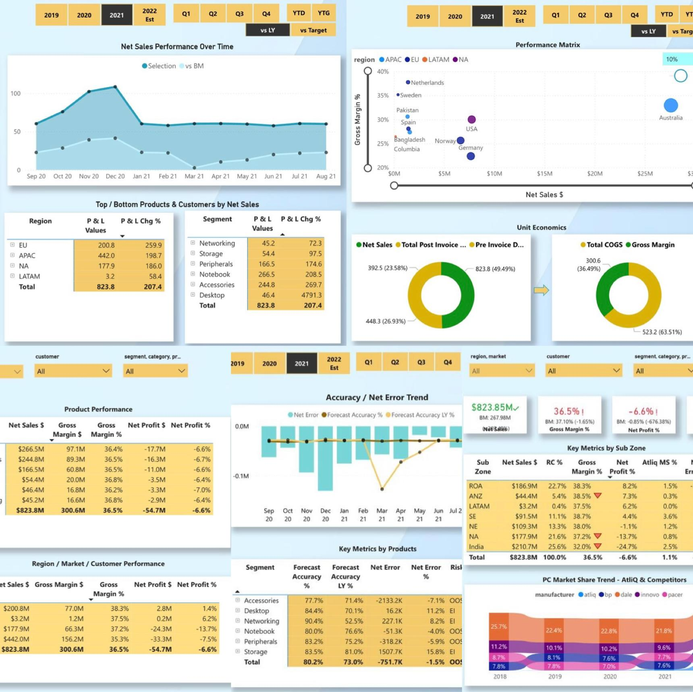

Professional Summary

I have always been fascinated by the way data can uncover patterns, explain human behavior, and even guide the future. That curiosity took me from an Economics degree to a Masters in Data Science and Artificial Intelligence. Over the past five years, I have worked with datasets of all kinds, digging into the details, coding solutions, and turning raw numbers into insights that support smarter decisions. Along the way, I have become skilled with Python, SQL, Excel, Power BI, Microsoft Azure, and more recently Generative AI and large language models (LLMs), which I have applied to create smarter and more scalable solutions.
What excites me most is the chance to solve meaningful problems in a fast moving environment, where data and AI directly shape strategy and outcomes. I am eager to bring that mindset to a team that values creativity, innovation, and measurable impact.
Key Skills


Business Insight 360
Designed a multi-view Power BI dashboard for AtliQ Hardware, analyzing finance, sales, marketing, supply chain, and management, by transforming 1.8M+ MySQL and Excel records to improve efficiency by 30% with DAX Studio and support data-driven decisions.Bitcoin Future Price Prediction
This project employs machine learning techniques, primarily utilizing the historical Bitcoin-GBP data spanning from January 1st, 2015, to September 1st, 2023.Four models – Multilayer Perceptron (MLP), Long Short-Term Memory (LSTM) network, Random Forest Regressor, and Gradient Boosting Machine Regressor were developed to predict Bitcoin prices. The top two performers, MLP and Random Forest, from both artificial neural networks and ensemble models were selected and optimized for future price predictions, yielding promising results exceeding 99% accuracy.
Semantic Segmentation: Exploring FCN, PSPNet, and UNET Architectures
This project delves into the comparative efficacy of three prominent architectures: FCN, PSPNet, and U-Net. By implementing these models and analyzing their performance, I gain profound insights into their strengths and limitations. Exploring augmentation techniques, I uncovered a plethora of methods for manipulating and presenting images, enhancing their diversity, and enriching our understanding of segmentation challenges.- © OGOCHUKWU JANE OKAFOR
- Design: HTML5 UP